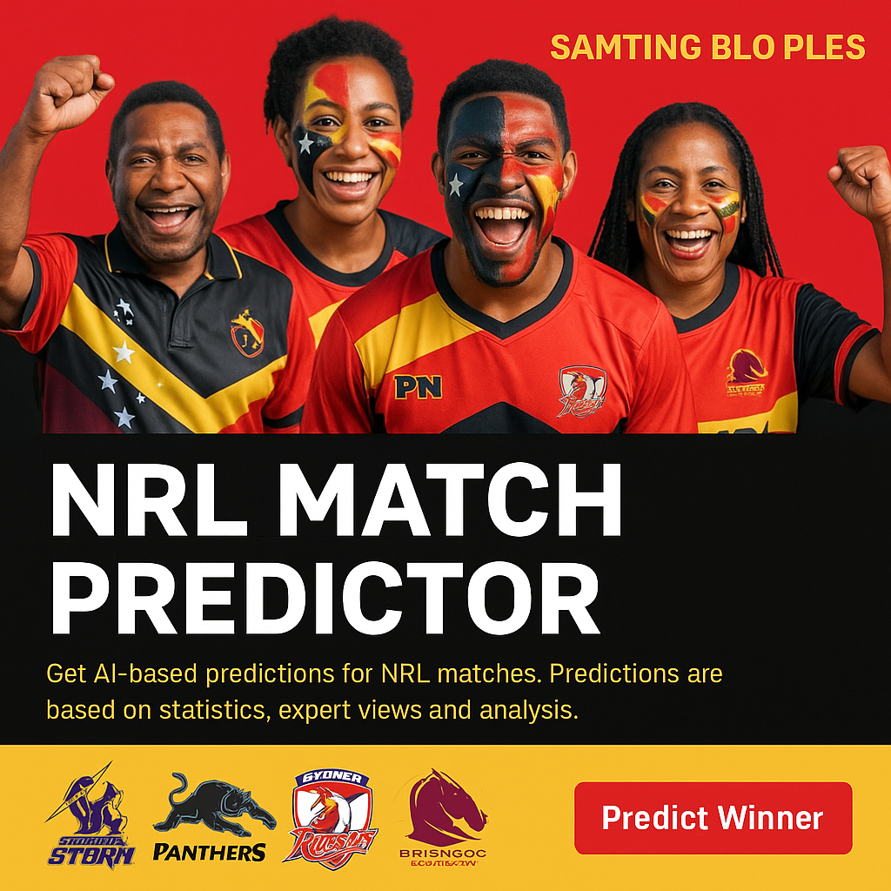

NRL Match Winner Predictor
Powered by AI and analysis of past results, live stats, expert views, and fan predictions from Papua New Guinea and beyond. It’s not just data — it’s Samting Blo Ples.
This predictor is powered by data from past matches, current form, expert opinions, and fan sentiment. It’s built for everyone in PNG who lives and breathes rugby league!
Try the Predictor NowTraim Nau!